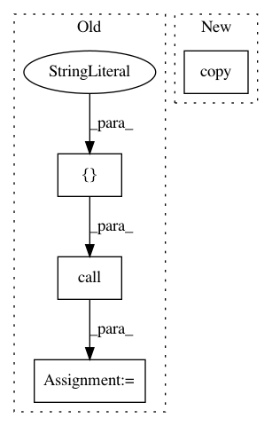

74310f451bd204e682b27c9b296d71a22c941cd3,mltsp/run_in_docker_container.py,,predict_in_docker_container,#Any#Any#Any#Any#Any#Any#Any#Any#Any#Any#Any#,241
Before Change
copied_metadata_file_path = os.path.join(
copied_data_dir, metadata_file.split("/")[-1])
tmp_files.append(copied_metadata_file_path)
status_code = call(
["cp", metadata_file, copied_metadata_file_path])
arguments["metadata_file"] = os.path.join(
"/home/mltsp/copied_data_files", metadata_file.split("/")[-1])
arguments["path_map"] = {copied_data_dir,"/home/mltsp/copied_data_files"}
After Change
os.path.join(cfg.MLTSP_PACKAGE_PATH,"custom_feature_scripts"),
"custom_feature_defs.py")
tmp_files.append(copied_custom_script_path)
shutil.copy(custom_features_script, copied_custom_script_path)
arguments["custom_features_script"] = ("/home/mltsp/mltsp/"
"custom_feature_scripts/"
"custom_feature_defs.py")
if os.path.isfile(str(metadata_file)):
In pattern: SUPERPATTERN
Frequency: 3
Non-data size: 4
Instances
Project Name: cesium-ml/cesium
Commit Name: 74310f451bd204e682b27c9b296d71a22c941cd3
Time: 2015-02-09
Author: a.crellinquick@gmail.com
File Name: mltsp/run_in_docker_container.py
Class Name:
Method Name: predict_in_docker_container
Project Name: cesium-ml/cesium
Commit Name: 74310f451bd204e682b27c9b296d71a22c941cd3
Time: 2015-02-09
Author: a.crellinquick@gmail.com
File Name: mltsp/run_in_docker_container.py
Class Name:
Method Name: featurize_in_docker_container
Project Name: cesium-ml/cesium
Commit Name: 74310f451bd204e682b27c9b296d71a22c941cd3
Time: 2015-02-09
Author: a.crellinquick@gmail.com
File Name: mltsp/custom_feature_tools.py
Class Name:
Method Name: copy_data_to_tmp_dir